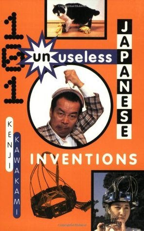
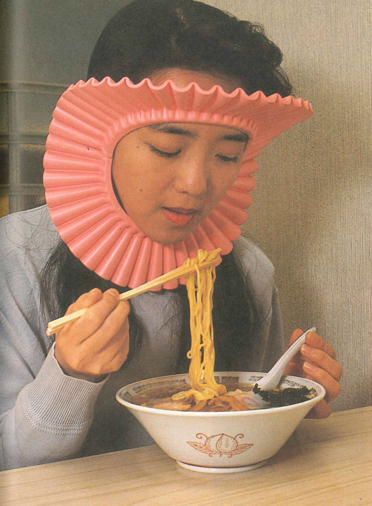
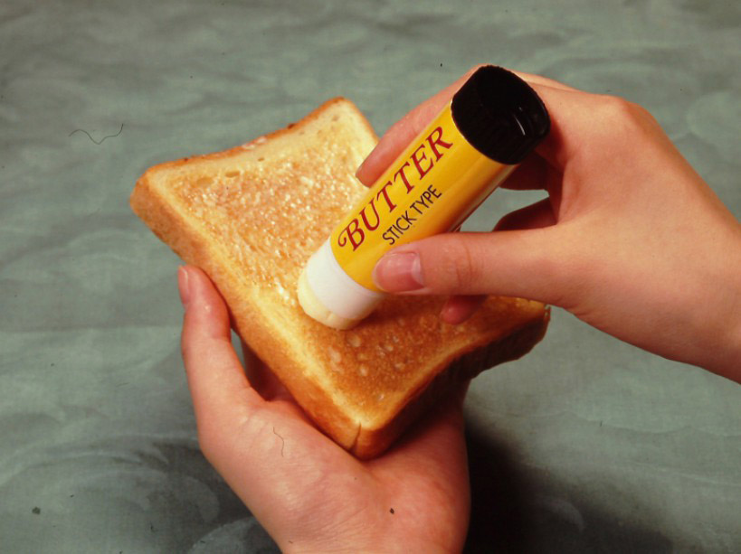
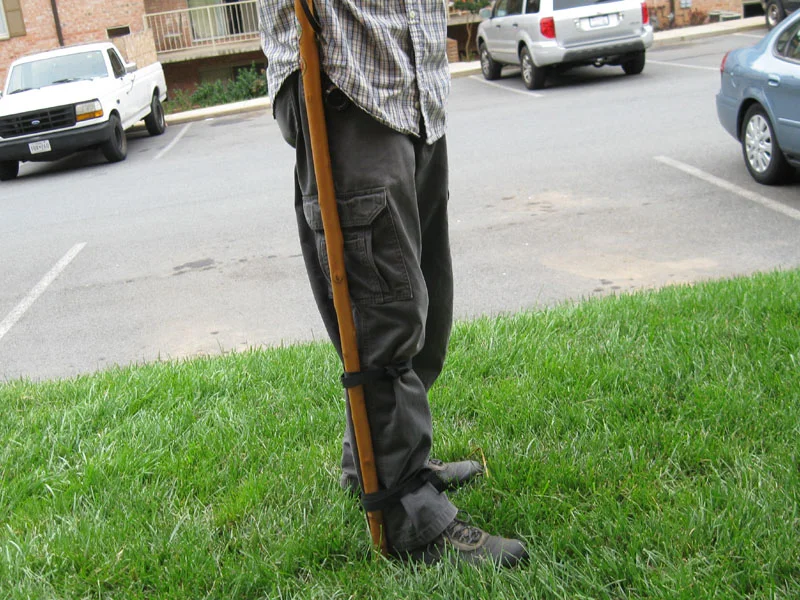
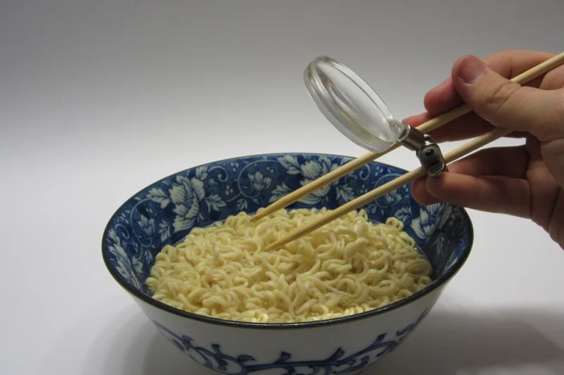
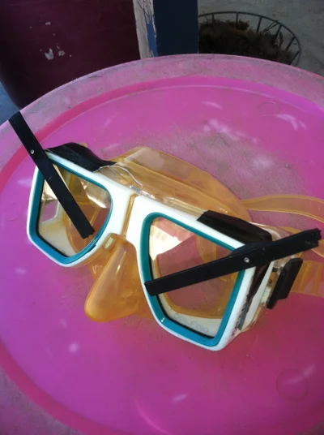
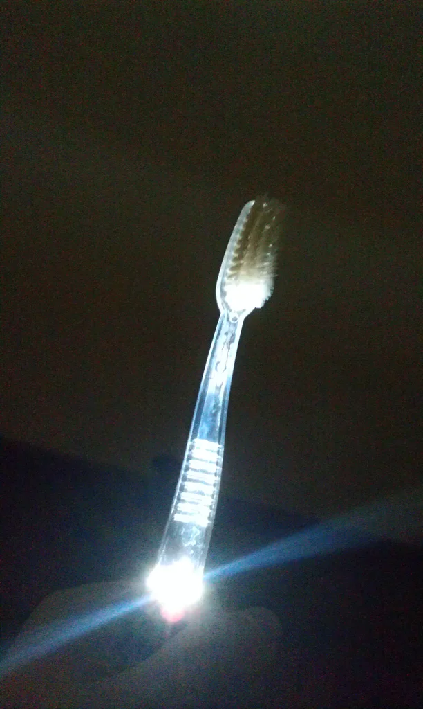
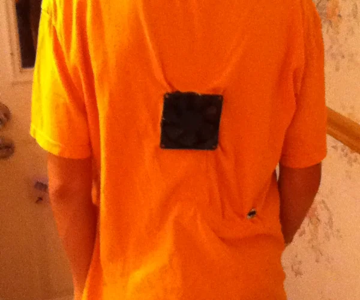
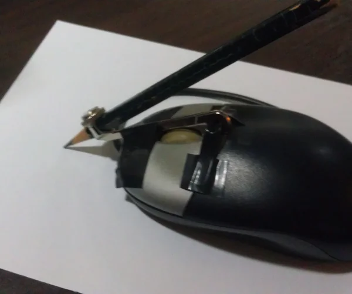

Chindōgu was first coined by Kenji Kawakami, a Japanese inventor. He published the book "101 Unuseless Japanese Inventions" in 1995. Some of these useless inventions include: Umbrella shoe savers, automatic chew counter, portable stoplight, cat tongue soother, fish face cover, butter stick.
More examples

Noodle Splash Guard

Butter Stick

Hands Free Walking Stick

Food Magnifier

Scuba Mask Wiper Blades

Toothbrush Light

Self Cooling T-Shirt

Pencil Mouse